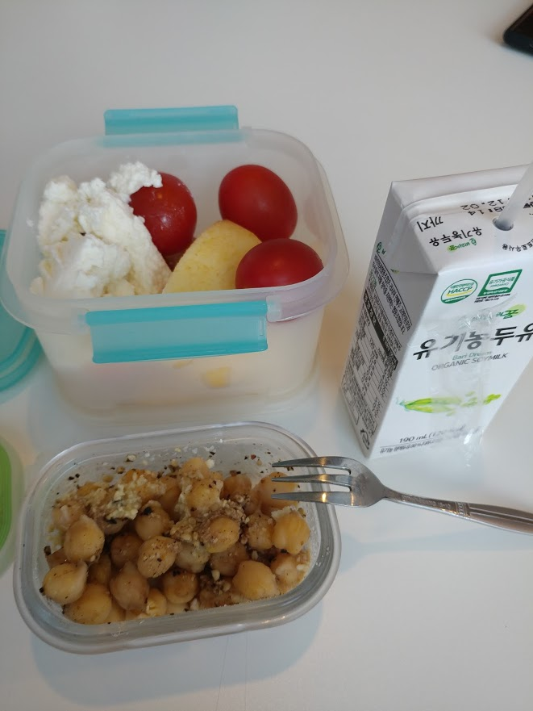
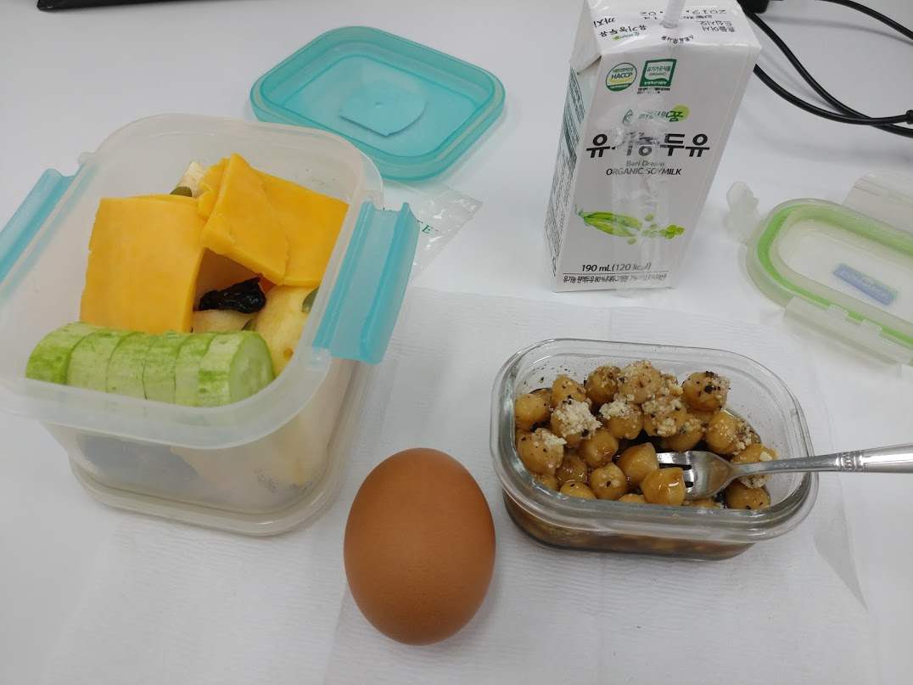
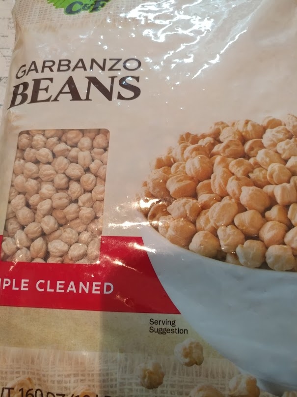

체중 감량 - 콩이 답입니다
게시: 2019-07-18T06:30:23+09:00
오늘은 매우 신변잡기스러운 이야기입니다. 바로 체중 감량을 위한 식단 이야기입니다.
최근에 제가 체중을 꽤 많이 줄였습니다. 결혼 이후로 조금씩 꾸준히 늘어서 86kg까지 갔다가, 최근 4개월 동안 10kg 정도를 줄여서 요즘은 75~76kg을 왔다갔다 합니다. 그 상태로 2개월 정도 지났으니, 아직은 요요 현상이 없지만 곧 요요 현상이 올 수도 있지요.
회사 동료들, 특히 여성 동지분들께서 비결이 뭐냐고 물으시는데, 간단합니다. 쌀 대신 콩을 드시면 됩니다. 제가 아침과 점심으로 아래 사진과 같은 음식을 먹습니다.
 
이게 체중을 줄이기 위해 맛도 없는 것을 억지로 먹는 것이 아닙니다. 맛이 꽤 괜찮고, 또 절대 배가 고프지 않습니다. 다만 저녁은 그냥 정상적으로 쌀밥을 먹기도 하고, 치킨을 먹기도 하며, 심지어 라면을 먹기도 합니다. 어쩌면 저녁까지 저 사진 속의 콩을 먹었다면 아예 마른 체형이 되었을지도 모르겠어요. 과체중의 진짜 원인은 기름진 고기가 아니라 탄수화물이라더니, 정말 그런 것 같아요. 저녁으로 (밥은 먹지 않고) 치킨이나 삼겹살을 먹은 다음 날보다, 저녁으로 쌀밥이나 라면, 또는 떡볶이를 먹은 다음 날이 더 체중이 늘어있더라고요.
이 식단의 핵심은 과일, 채소와 콩, 그리고 치즈와 달걀입니다. 보통 도시락에 비해서 빠진 것이 탄수화물이지요. 원래 저는 아침으로는 빵이나 시리얼을 먹었고, 점심은 그냥 식당에서 사먹었습니다. 저도 전부터 '저탄고지'가 답이라는 소리는 귀에 못이 박히도록 들었는데, 솔직히 믿지는 않았습니다. 그런데, 어쩌다가 실제로 해보니 정말 신기할 정도로 체중이 막 줄더라고요.
저 사진 속 음식들은 대부분 불을 안 쓰고 그냥 칼로 썰어놓은 것 뿐이라서, 레시피를 적을 만한 것은 딱 하나 콩 뿐인데, 그나마 요리라고 하기엔 너무 간단한 것입니다. 원래 저 콩은 코스트코에서 파는 이집트콩(chickpea, 병아리콩)을 삶은 것입니다. 4.5kg에 대략 1만2천원 정도 했던 것으로 기억합니다. 굉장히 쌉니다 ! 대신 바싹 말린 것이라서, 삶기 전에 몇 시간 동안 물에 불려야 합니다. 그 다음에 그냥 30분 정도 삶기만 하면 됩니다.

그렇게 삶은 콩을 냉장고에 넣어두고 먹을 만큼 꺼내어 (보통 밥공기로 1/4 정도 하시면 1인분으로 충분) 차가운 상태 그대로 발사믹 식초(또는 그냥 식초나 레몬즙, 깔라만시즙 등도 나쁘지 않습니다), 올리브유, 소금과 후추를 약간씩 넣고 그 위에 파머잔 치즈 가루를 약간 뿌리면 됩니다.
맛있고 간편하고, 무엇보다 조금만 먹어도 매우 든든합니다. 전에 황제 다이어트 하시는 분들은 고기만 드셔야 했다는데, 그에 비하면 비용도 적게 들고 건강에도 훨씬 좋습니다. 사무실에서 도시락을 까먹을 때 음식 냄새가 많이 나면 주변에 민폐가 될 수도 있는데, 저런 도시락은 음식 냄새가 거의 나지 않기 때문에 그런 민폐 위험도 없습니다. 그리고 저런 식으로 먹으면 일반 한식을 먹는 것에 비해 확실히 소금을 적게 먹게 되므로 각종 성인병 예방에도... 아마 좋지 않을까 합니다.
한가지 안 좋은 점이 있다면 주말마다 제가 그동안 굶주렸던 탄수화물 사냥에 나선다는 점입니다. 주로 빵과 국수 종류지요. 그럼에도 불구하고 2달째 아직 저 정도의 체중을 유지하는 것을 보면 콩을 주식으로 삼는 것이 꽤 괜찮은 식단 같습니다.
* 콩에 대한 재미있는 역사 이야기는 지난 번에 올렸던 "다니엘과 장발장과 나폴레옹의 콩 이야기"를 읽어보시면 좋겠습니다.